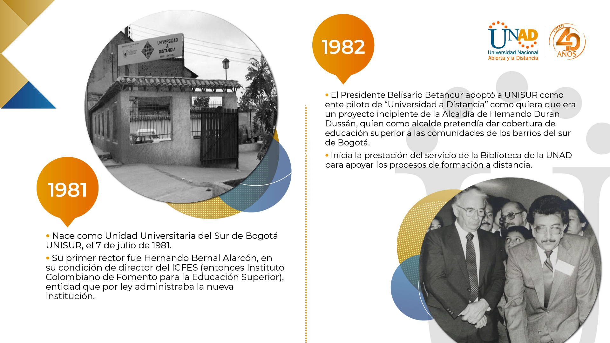

La Universidad Nacional Abierta y a Distancia (UNAD) fue fundada con el propósito de ofrecer educación superior accesible a todos los colombianos,
bajo un modelo innovador de enseñanza abierta y virtual. Desde sus inicios, la institución ha trabajado por democratizar el acceso a la educación
de calidad, fomentando el desarrollo social, económico y cultural de las regiones del país.
Fundada en 1981 como **UNISUR** (Unidad Universitaria del Sur de Bogotá), la universidad se consolidó como una entidad pública adscrita al
Ministerio de Educación Nacional mediante la Ley 52 de 1981. Posteriormente, fue transformada por el Congreso de la República en la
**Universidad Nacional Abierta y a Distancia**, ampliando su cobertura y fortaleciendo su compromiso con la formación integral de los ciudadanos.
🎯 Misión
La UNAD tiene como misión contribuir a la educación inclusiva, equitativa y de calidad mediante un modelo pedagógico centrado en el aprendizaje autónomo,
flexible y mediado por tecnologías de la información. Su propósito es formar ciudadanos éticos, críticos y comprometidos con el desarrollo sostenible
y la transformación social de Colombia.
🌎 Visión
Ser reconocida como una de las principales universidades virtuales de América Latina, líder en innovación educativa y en el uso de tecnologías digitales
aplicadas al aprendizaje, la investigación y la proyección social, contribuyendo al progreso y bienestar de las comunidades.
🏛️ Origen
El origen de la UNAD se remonta a la necesidad de ofrecer oportunidades de educación superior a personas que, por razones geográficas, laborales o económicas,
no podían acceder a la educación presencial tradicional. Con el respaldo del Estado colombiano, la universidad se consolidó como pionera en la modalidad abierta
y a distancia, siendo ejemplo de inclusión educativa en el país.
📚 Evolución
A lo largo de su historia, la UNAD ha evolucionado significativamente, pasando de ofrecer programas por correspondencia a convertirse en una institución
completamente digital. Hoy cuenta con una robusta infraestructura tecnológica, plataformas virtuales de aprendizaje, centros regionales en todo el país
y una amplia oferta de programas de pregrado y posgrado. Esta evolución refleja su compromiso constante con la calidad, la innovación y la formación de
profesionales competentes para el mundo globalizado.